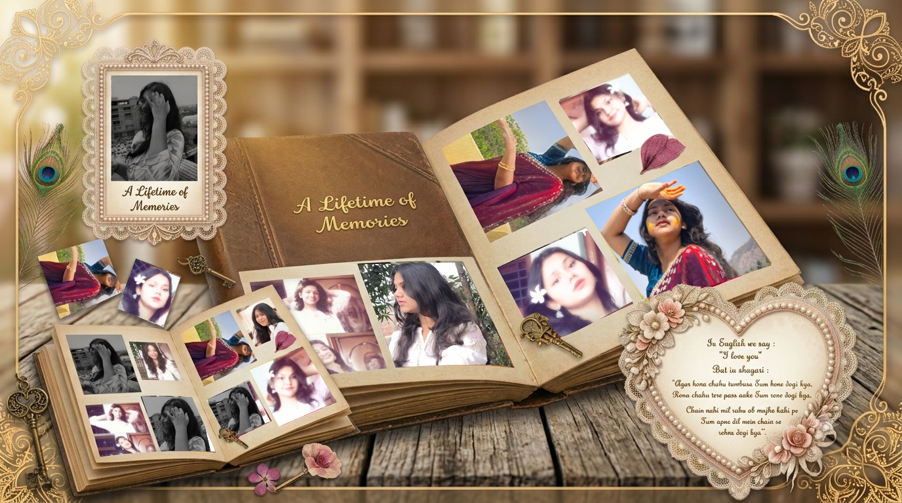

The little things
Our in-jokes, shared coffee, and the lovely rhythm of an ordinary day together.
A collection of our days
Some moments are too lovely to leave behind. So we gathered them here, between these pages, where we can find them whenever we need a little reminder of us.
Turn to the first page
To my favorite person
The ordinary afternoons that turned into our favorite stories. The laughter we couldn't quite contain. The quiet comfort of knowing that, wherever life takes us, we get to find our way back to each other.
Here's to every page we've filled — and all the ones still waiting.
Our in-jokes, shared coffee, and the lovely rhythm of an ordinary day together.
New places, unexpected turns, and every road that brought us a little closer.
Not just the moments in the album, but the love that holds them all together.